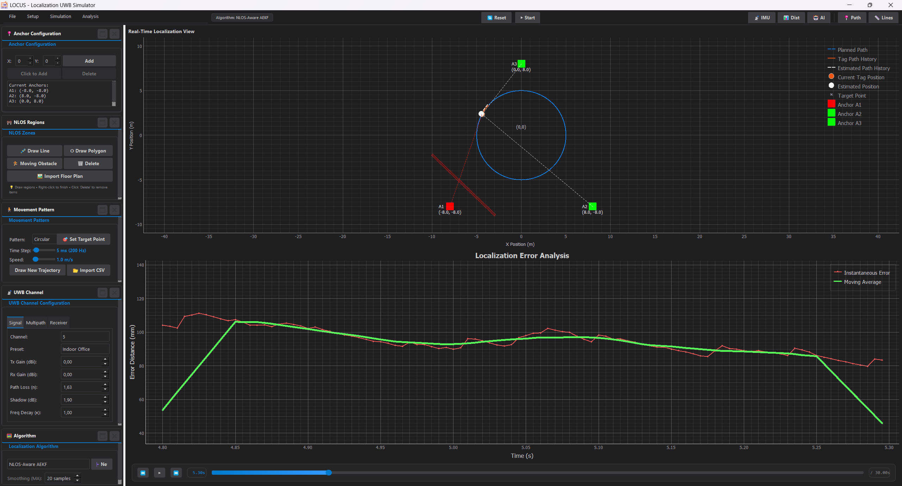
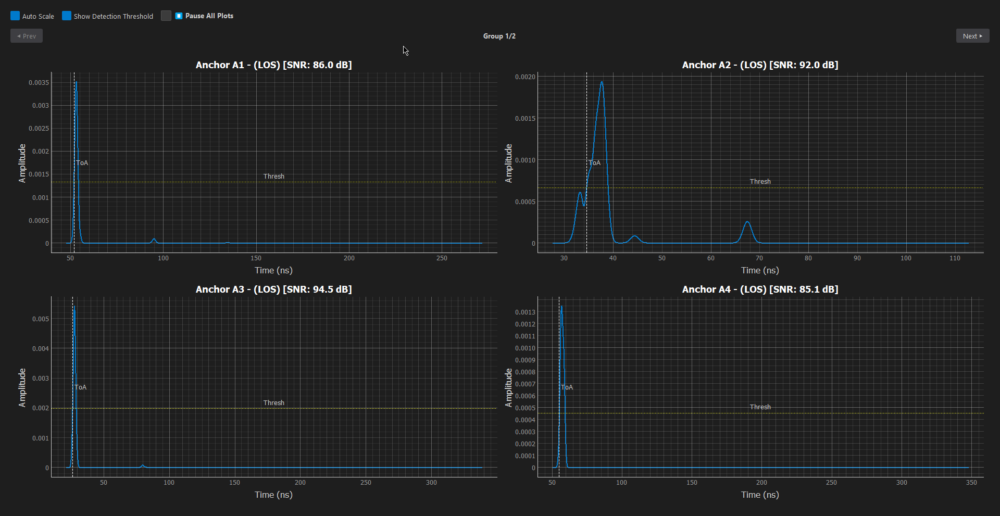
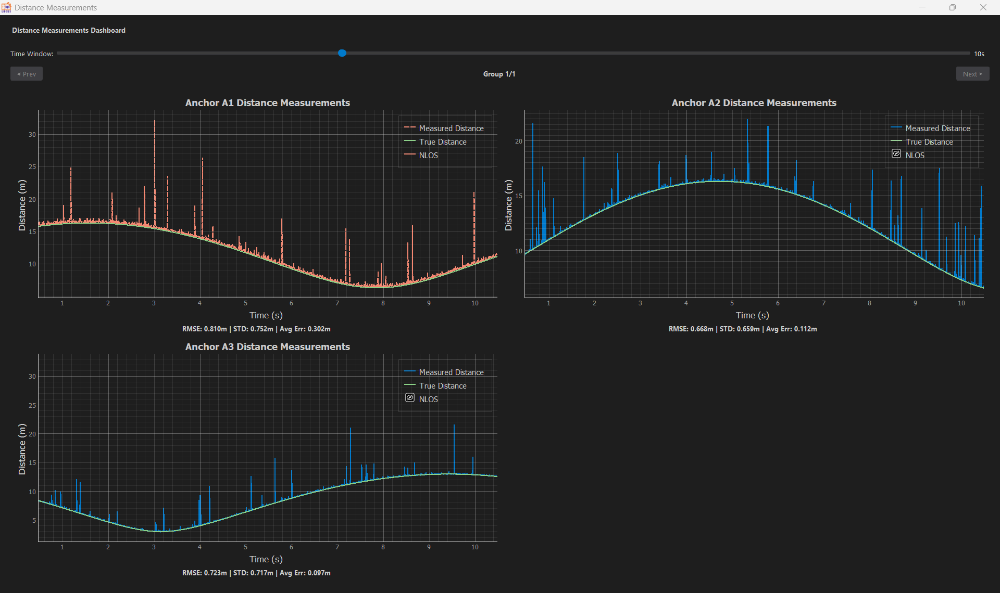
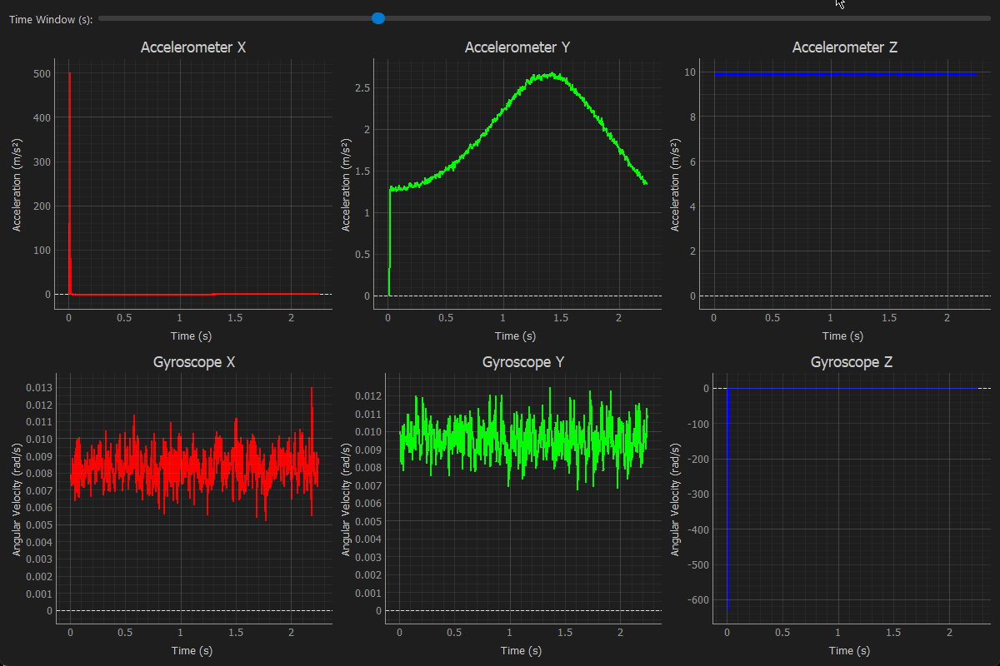

User Guide
A complete guide to using the PULSE simulator interface and features.
1. Main Dashboard
The main window is your command center. It provides immediate access to visualization, controls, and status updates.

Tool Bar
Top controls for:
- Play/Pause: Control simulation flow.
- Settings: Open configuration dialogs.
- View: Toggle different analysis windows.
Visualization Pane
The interactive map displaying:
- Anchors: Blue triangles.
- Tag: Moving circle.
- Rays: Signal paths (Green=LOS, Red=NLOS).
Control Panel
Sidebar for quick adjustments:
- Speed: Adjust simulation playback speed.
- Layers: Toggle visibility of trails, rays, etc.
2. Environment Management
Learn how to set up your simulation world.
⚓ Managing Anchors
Anchors are the fixed reference points (Base Stations).
- Add Anchors: Open the Anchors Configuration panel -> Click "Click to Add" -> Click on map.
- Move Anchors: Drag and drop any anchor on the map to reposition it.
- Multi-Select: Hold 'A' and drag to select multiple anchors (Yellow Box).
- Multi-Move: Hold 'A' + 'D' and drag to move selected group. (Simulation Auto-Pauses)
- Delete Anchors: Click "Delete" in the panel -> Click on the anchor to remove.
🚧 Managing Obstacles
Create walls and zones to simulate signal blocking.
Static Walls & Zones
- Draw Lines (Walls): Panel -> "Draw Line" -> Start Click -> End Click -> Right-Click to finish.
- Draw Polygons (Zones): Panel -> "Draw Polygon" -> Click multiple points -> Right-Click to close.
- Multi-Select: Hold 'O' and drag to select zones (Yellow Box).
- Multi-Move: Hold 'O' + 'P' and drag to move selected group. (Simulation Auto-Pauses)
- Edit Properties: Right-click any zone to change its material (Concrete, Glass, etc.).
Moving Obstacles
- Click "Moving Obstacle".
- Click Start Point -> Click End Point.
- Set speed and shape in the popup.
3. Window Management
PULSE uses a modular, floating window system perfect for multi-monitor setups.
Opening Windows
Go to Top Menu -> View to open:

CIR Plot
Visualize the Channel Impulse Response and multipath components.

Distance Plot
Track real-time ranging errors and signal stability.

IMU Data
Monitor live Accelerometer and Gyroscope sensor streams.
Docking
Windows float by default. Drag them to secondary screens for better visibility. Close them with the 'X' button; they can always be reopened from the View menu.
4. Movement Configuration
Simulate realistic tag movement with flexible pattern generation and custom obstacles.
Movement Panel
Located in the control sidebar:
- Pattern: Select from presets like Circular, Figure 8, or Random Walk.
- Speed: Adjust the physical speed of the tag (m/s).
- Time Step: Control simulation resolution (default 5ms). Lower values = smoother but slower simulation.
- Custom: Use "Draw" to sketch a path or "Import CSV" for precise coordinates.
Moving Obstacles
Dynamic environments can be modeled with moving blockages (e.g., people, forklifts).
- Create: In the NLOS Panel, click "Moving". Set start/end points on the map.
- Configure: A window will open to set:
- Trajectory: Speed, Rotation, and exact coordinates.
- Shape: Circle, Rectangle, Triangle, etc., with dimensions.
- Materials: Specific containment/attenuation properties.
5. Localization Algorithms
Test and compare different position estimation techniques.
Algorithm Selection
The Localization Algorithm panel allows real-time switching:
- Standard: EKF (Extended Kalman Filter), UKF, Trilateration.
- Advanced: NLOS-Aware AEKF, Particle Filters.
- Smoothing (MA): Adjust the Moving Average window to reduce jitter in static conditions.
Adding Custom Algorithms
Extend the simulator with your own Python-based logic.
- Open Creator: In the Localization Algorithm panel, click the "➕ New" button.
- Configure:
- Name: Enter a unique name for your algorithm.
- Features: Check boxes to auto-generate code templates for IMU Data, Kalman State, or NLOS Handling.
- Code: Use the built-in editor to implement your standard
update(input_data)method. - Save: Click "Save Algorithm". It will automatically load into the dropdown menu.
6. UWB Channel Modeling
Deeply customize the UWB physical layer and channel effects.
Signal & Link
Configure basic propagation physics:
- Channel: Select UWB Band (e.g., Ch 5, Ch 9).
- Path Loss: Set exponent (n) and shadowing (σ).
- Antenna Gain: Tx/Rx gain in dBi.
Multipath (S-V Model)
IEEE 802.15.3a / 802.15.4a standard modeling:
- Cluster Decay (Γ): Inter-cluster arrival decay.
- Ray Decay (γ): Intra-cluster ray decay.
- Noise: Receiver noise figure and jitter.
Zone-Specific Modeling
Each obstacle or zone can have unique material properties.
- Edit Zone: Right-click any drawn polygon to open its Parameters Window.
- Presets: Load standard materials (Concrete, Glass, Wood) or save your own custom configurations.
- Visuals: Assign distinct colors to zones to represent different attenuation levels.